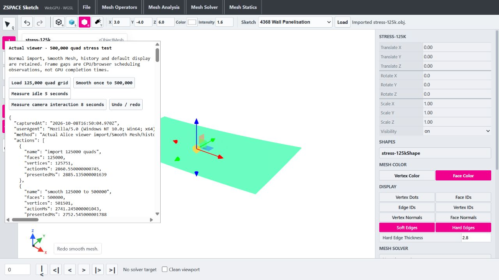

Surface bounds and publication profiling
08 October 2026 - viewer only; exact sphere/output parity
Changes
- Add opt-in payload-normal, surface-buffer-expansion, surface-bounding-sphere and scene-payload-copy phases. Normal use performs no recording.
- Compute face-color bounds from distinct referenced vertices with a temporary Uint8 marker. Keep THREE box-center and squared-distance arithmetic; exclude unused vertices. Vertex-color geometry still uses THREE unchanged.
- Fall back to THREE for malformed indices/position lengths or nonfinite referenced coordinates, preserving its diagnostics.
- Keep all defensive publication, active-payload and history copies. A measured publication copy was smaller than bounds, and ownership remains essential for mutable sketch inputs. No borrowed payload or shared buffer policy introduced.
Node bounds medians (ms)
| Quads | Before | After |
|---|
| 125,000 | 30.38 | 4.60 |
| 500,000 | 93.24 | 16.16 |
Browser Smooth phase samples (ms)
| Capture | Phase | Time |
|---|
| before | surface-buffer-expansion | 79.06 |
| before | surface-bounding-sphere | 110.53 |
| before | scene-payload-copy | 41.49 |
| before | scene-publication-inclusive | 548.40 |
| before | cpp-smooth-and-export | 570.66 |
| after | surface-buffer-expansion | 145.25 |
| after | surface-bounding-sphere | 45.23 |
| after | scene-payload-copy | 174.52 |
| after | scene-publication-inclusive | 836.89 |
| after | cpp-smooth-and-export | 1370.21 |
Inclusive phases contain their child phases. Do not sum them together.
Verification
- Baseline, diagnostic and post-extraction npm run build passed.
- 428 exact sphere comparisons, 62 surface-buffer and 60 renderer cases passed, including existing cache ownership/invalidation/LRU contracts.
- Actual WebGPU viewer import 125k, Smooth to 500k, undo/redo and idle scheduling verified.
[
{
"name": "import 125000 quads",
"faces": 125000,
"vertices": 125751,
"actionMs": 2860.550000000745,
"presentedMs": 2885.135000001639
},
{
"name": "smooth 125000 to 500000",
"faces": 500000,
"vertices": 501501,
"actionMs": 2741.245000001043,
"presentedMs": 2752.545000001788
},
{
"name": "undo smooth",
"faces": 125000,
"vertices": 125751,
"actionMs": 176.95999999716878,
"presentedMs": 226.535000000149
},
{
"name": "redo smooth",
"faces": 500000,
"vertices": 501501,
"actionMs": 639.9899999983609,
"presentedMs": 833.9400000013411
}
]
Limitations
- Three alternating-order Node bounds trials exclude surface allocation/expansion, browser, GPU, history and publication. Full surface-buffer output is unchanged; its timings vary.
- Browser samples are one fresh load before and after, without concurrent compilation/Node tests. No stable action median, FPS guarantee or broad responsiveness claim.
- Marker storage at 500k/501501 vertices is 501501 bytes, local to the bounds call; no cache or total/peak memory reduction claimed.
- The comparison harness uses the preserved ignored renderer snapshot at wasm/tmp/viewer-surface-bounds-before/renderers-profiled.ts.
- Expected THREE diagnostics for nonfinite unused coordinates in vertex-color mode occurred in parity checks and are unchanged.
- Existing bundle-size warning remains. Kernel/ABI, runtime artifacts, sketches and unrelated selection/display behavior were not modified. Other dirty user changes were preserved.
Next priority
Measure stable per-phase action medians on representative meshes before choosing publication validation, transfer/native installation or worker ownership work. Smooth remains synchronous.
Changed files
- ../zspace_alice_webviewer/src/renderers.ts
- ../zspace_alice_webviewer/src/meshSurfaceBounds.ts
- ../zspace_alice_webviewer/tests/meshSurfaceBounds.test.mjs
- ../zspace_alice_webviewer/reports/Alice-Viewer-Implementation-Roadmap.md
- tests/performance/viewer-surface-bounds-parity.mjs
- reports/generate-surface-bounds-report.py
- reports/viewer-surface-bounds-parity.json
- reports/viewer-surface-bounds-before.json
- reports/viewer-surface-bounds-after.json
- reports/viewer-surface-bounds-optimization.json
- reports/viewer-surface-bounds-optimization.html
- reports/viewer-surface-bounds-500k.png
No commit or push.